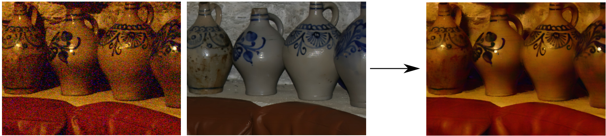

Abstract
The bilateral filter and its variants such as the Joint/Cross bilateral filter are well known edge-preserving image smoothing tools used in many applications. The reason of this success is its simple definition and the possibility of many adaptations. The bilateral filter is known to be related to robust estimation. This link is lost by the ad hoc introduction of the guide image in the Joint/Cross bilateral filter. We here propose a new way to derive the Joint/Cross bilateral filter as a particular case of a more generic filter which we name the Guided bilateral filter. This new filter is iterative, generic, inherits the robustness properties of the Robust bilateral filter and uses a guide image. The link with robust estimation allows us to relate the filter parameters with the statistics of input images. A scheme based on Graduated Non Convexity is proposed, which allows converging to an interesting local minimum even when the cost function is non-convex. With this scheme, the Guided bilateral filter can handle non-Gaussian noise on the image to be filtered. A complementary scheme is proposed to handle also non-Gaussian noise on the guide image even if both are strongly correlated. This allows the Guided bilateral filter to handle situations with more noise than the Joint/Cross bilateral filter can work with and leads to high Peak Signal to Noise Ratio PSNR values as shown experimentally.
Source
Bibtex
@ARTICLE{jpt-ip15, author = {Caraffa, L. and Tarel, J.-P. and Charbonnier, P.}, title = {The Guided Bilateral Filter: When the Joint/Cross Bilateral Filter Becomes Robust}, journal = {IEEE Transactions on Image Processing}, volume = {24}, number = {4}, year = {2015}, pages = {1199--1208}, month = apr, url = {http://perso.lcpc.fr/tarel.jean-philippe/publis/ip15.html}, doi = {10.1109/TIP.2015.2389617} }